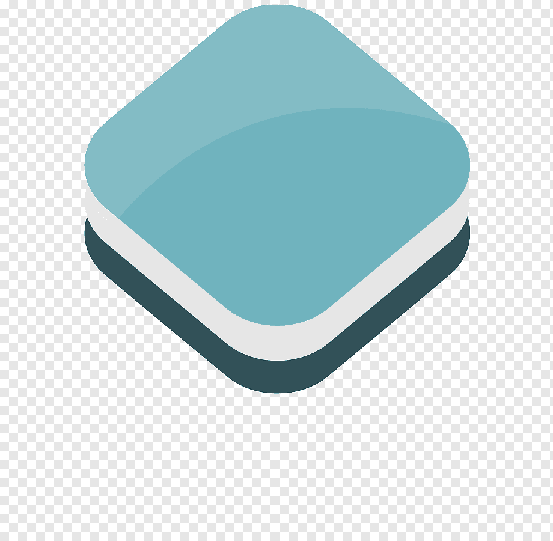

Juoksija
Juoksija magazine covered our story in edition 3/2021 of their magazine.
We are Mark Potze and Vincent Weeda, both Dutch and both living in Finland for about 5 years. We decided to challenge ourselves to run every single street in Helsinki during the year 2021.
Streets completed: 1348 / 3734
36%
Hover on the button in the top-right corner to switch layers on and off: 
Click on the green lines to see run details and on the black dots to see the photo taken at that location.

We saw a short documentary about Rickey Gates, an American ultra-runner who decided to run every single street of San Fransisco. We got inspired and in the end of December 2020 we joked to each other that we should do the same in Helsinki in 2021. After some quick research we found out that the streets in Helsinki comprise of roughly 1300km and when running 30% extra (for example because of dead-end streets) we would need to run around 1700km. For us that is still a lot, but not impossible, so we decided to go for it. We started gathering the tools for planning our routes and tracking our progress. After some trial and error we are now using QGIS to plan our routes, Strava to record our runs and Citystrides to track our progress. We are manually planning our routes and for each area we try to create the shortest route, while still covering every street completely. It's the so-called Chinese Postman problem.
This challenge makes us see the city of Helsinki from a new perspective. Usually we run in parks or gravel roads somewhere away from traffic. Now we try to avoid those and stick to the actual streets themselves. It's a great way to discover new neighborhoods in the city and even new places in the very same neighborhood where you live. We hope to inspire you to take a different walking/running route every now and then. An easy start is to follow your favorite route in opposit direction.
See where it all started for us, but don't be surprised if you end up walking or running all the streets in your own neighborhood soon:


Running 1700km within one year requires good gear and of course great running shoes. We are proud cooperation partner of Hoka One One, the supplier of our running shoes and gear for this challenge.
Vincent is running on the Arahi 5, which contains Hoka's J-Frame™ technology designed to prevent excessive inward roll, or overpronation, without overcorrecting your gait. The Arahi 5 features a low-profile cushion bed that keeps your foot closer to the ground, and utilizes a firmer material designed to provide an efficient push-off. It is a stability shoe that does not compromise on lightness, cushioning and rollability of the shoe!
Mark is running on the Clifton 7, which features a symmetrical bed of cushion without additional prescriptive technologies. Designed to provide the support you want and nothing you don't. The Clifton 7 is designed to provide protective cushion while maintaining a responsive toe-off for when you want to go faster.
Due to COVID-19 restrictions we don't actively advertise our runs for others to join. When the restrictions loosen, we'll keep you up to date either here or on our Instagram. We hope to have you join us for a run or two soon!

See what others have to say about our challenge:
Juoksija magazine covered our story in edition 3/2021 of their magazine.
Kymmenen uutiset featured us on 19 March 2021 in the 'loppukevennys'. Mika Tommola was with us at the Dutch Embassy and interviewed us on the streets in Kaivopuisto area.

HBL newspaper published our story in the beginning of March 2021